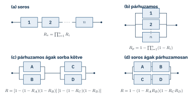
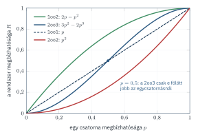
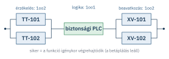
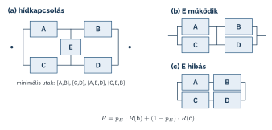
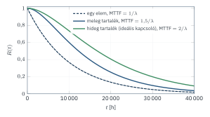

9. Rendszermegbízhatóság: blokkdiagramok és k-ból-n rendszerek

Az előző fejezet egyetlen elem élettartamát írta le. A valódi rendszerek sok elemből állnak, és a rendszer megbízhatósága attól függ, hogyan kapcsolódnak egymáshoz az elemek a működés logikája szerint. A megbízhatósági blokkdiagram (reliability block diagram, RBD) ennek a logikának a legszemléletesebb leírása. Ebben a fejezetben megismerjük a blokkdiagram és a struktúrafüggvény fogalmát, a soros és párhuzamos rendszerek összefüggéseit, a redundáns rendszerek legfontosabb családját, a k-ból-n (koon) rendszereket, a nem soros-párhuzamos rendszerek kezelését, a hideg és meleg tartalékolást, végül a bizonytalan komponensadatok hatását a rendszer megbízhatóságára.
A fejezet végére képes leszel
- megbízhatósági blokkdiagramot és struktúrafüggvényt felírni egy rendszerre;
- kiszámolni soros, párhuzamos és ezekből összetett rendszerek megbízhatóságát és MTTF-jét;
- a k-ból-n rendszerek megbízhatóságát binomiális modellel számolni, és értelmezni a biztonsági rendszerek 1oo2, 2oo2 és 2oo3 architektúráit;
- nem soros-párhuzamos rendszereket állapotfelsorolással, dekompozícióval és minimális utakkal kezelni;
- összevetni a meleg és a hideg tartalékolást;
- a komponensadatok bizonytalanságát intervallumbecsléssel és Monte Carlo-szimulációval a rendszer szintjére vinni.
9.1. A megbízhatósági blokkdiagram
A megbízhatósági blokkdiagram a rendszer helyes működésének grafikus, logikai modellje (IEC 61078 (IEC 2016)). Minden blokk egy elemet vagy funkciót jelöl, amely vagy működik, vagy nem. A diagramnak egy bemenete és egy kimenete van; a rendszer akkor működik, ha a bemenettől a kimenetig van olyan útvonal, amelynek minden blokkja működik.
Az RBD szemléletes, de három fontos feltevésre épül:
- Két állapot: minden elem vagy működik, vagy meghibásodott; a részleges működés vagy a degradáció nem ábrázolható.
- Függetlenség: az elemek meghibásodásai egymástól függetlenek, és egy elem meghibásodása nem változtatja meg a többi elem megbízhatósági jellemzőit. A közös okú meghibásodásokat külön kell modellezni (10. és 13. fejezet).
- Statikus logika: a meghibásodások sorrendje nem számít. A sorrendfüggő viselkedés (például a tartalék csak a fő elem kiesése után indul) Markov-modellt igényel (12. fejezet).
A megbízhatósági blokkdiagram a logikai kapcsolatot ábrázolja, nem a fizikait. Két, villamosan párhuzamosan kötött ellenállás megbízhatósági szempontból soros lehet (ha bármelyik szakadása a funkció elvesztését okozza), és két sorba kötött szelep megbízhatósági szempontból párhuzamos lehet (ha bármelyik zárása elég az áramlás megszüntetéséhez). Ráadásul ugyanannak a rendszernek más-más blokkdiagramja lehet különböző funkciókra vagy meghibásodási módokra: a sorba kötött szelepek a „zárás” funkcióra párhuzamosak, a „nyitás” funkcióra sorosak.
9.1.1. A struktúrafüggvény
A blokkdiagram matematikai megfelelője a struktúrafüggvény. Jelölje \(x_i\) az \(i\)-edik elem állapotát (\(x_i = 1\), ha működik, \(x_i = 0\), ha nem), és \(\phi(\mathbf{x})\) a rendszer állapotát. Soros és párhuzamos rendszerre:
\[ \phi_{\text{soros}}(\mathbf{x}) = \prod_{i=1}^{n} x_i , \qquad \phi_{\text{párh.}}(\mathbf{x}) = 1 - \prod_{i=1}^{n} (1 - x_i) . \tag{9.1}\]
Ha az elemek függetlenek, és az \(i\)-edik elem megbízhatósága \(p_i = P(x_i = 1)\), akkor a rendszer megbízhatósága a struktúrafüggvény várható értéke: \(R = E[\phi(\mathbf{x})]\). A gyakorlatban értelmes rendszerek koherensek: minden elem számít (van olyan állapot, amelyben az elem állapota dönti el a rendszerét), és egy elem javulása nem ronthatja a rendszert.
9.2. Soros és párhuzamos rendszerek
A 9.1. ábra az alapvető struktúrákat és megbízhatóságukat mutatja.

A soros rendszer akkor működik, ha minden eleme működik; megbízhatósága az elemek megbízhatóságának szorzata, ezért az elemek számának növelésével csökken. A párhuzamos rendszer akkor hibásodik meg, ha minden eleme meghibásodott; meghibásodási valószínűsége az elemek meghibásodási valószínűségeinek szorzata, ezért az elemek számával nő a megbízhatósága.
9.2.1. Exponenciális elemekből álló rendszerek
Ha az elemek élettartama exponenciális, a soros rendszer élettartama is exponenciális, a ráták összegével:
\[ R_s(t) = \prod_{i=1}^n e^{-\lambda_i t} = e^{-\left(\sum_i \lambda_i\right) t}, \qquad \text{MTTF}_s = \frac{1}{\sum_i \lambda_i} . \tag{9.2}\]
Ez a „ráták összeadása” az alkatrészszámláláson alapuló megbízhatósági előrejelzés (parts count) alapja: egy elektronikai modul meghibásodási rátája közelítőleg az alkatrészei rátáinak összege.
A párhuzamos rendszer élettartama már nem exponenciális. \(n\) azonos, \(\lambda\) rátájú elem esetén
\[ R_p(t) = 1 - \left(1 - e^{-\lambda t}\right)^n , \qquad \text{MTTF}_p = \frac{1}{\lambda} \sum_{k=1}^{n} \frac{1}{k} . \tag{9.3}\]
Két elemre \(\text{MTTF}_p = 1{,}5/\lambda\), háromra \(1{,}83/\lambda\). A redundancia tehát az MTTF-et csak mérsékelten növeli; a valódi előnye a megbízhatóság növekedése a küldetés elején, amikor \(\lambda t \ll 1\): ekkor \(1 - R_p \approx (\lambda t)^n\), vagyis a meghibásodási valószínűség az egycsatornás érték \(n\)-edik hatványára csökken.
9.2.2. Összetett rendszerek
A soros és párhuzamos részekből összetett rendszert lépésenként egyszerűsítjük: kiszámoljuk a legegyszerűbb soros vagy párhuzamos részek megbízhatóságát, ezeket egy-egy blokkal helyettesítjük, és addig folytatjuk, amíg egyetlen blokk marad.
Egy rendszer akkor működik, ha az \(R_3 = 0{,}95\) megbízhatóságú elem mellett az \(R_1 = 0{,}8\) és az \(R_2 = 0{,}9\) megbízhatóságú elemek közül legalább az egyik működik. A párhuzamos rész megbízhatósága \(1 - 0{,}2 \cdot 0{,}1 = 0{,}98\), a rendszeré
\[ R = 0{,}95 \cdot 0{,}98 = 0{,}931 . \]
Ugyanez az eredmény az állapotfelsorolással (igazságtáblával) is megkapható: a 2³ = 8 lehetséges állapotból azokat választjuk ki, amelyekben a rendszer működik, és összegezzük a valószínűségüket.
| \(x_1\) | \(x_2\) | \(x_3\) | rendszer | állapot valószínűsége |
|---|---|---|---|---|
| 1 | 0 | 1 | működik | \(0{,}8\cdot 0{,}1\cdot 0{,}95 = 0{,}076\) |
| 0 | 1 | 1 | működik | \(0{,}2\cdot 0{,}9\cdot 0{,}95 = 0{,}171\) |
| 1 | 1 | 1 | működik | \(0{,}8\cdot 0{,}9\cdot 0{,}95 = 0{,}684\) |
| összesen | 0,931 |
Az állapotfelsorolás minden kétállapotú, független elemekből álló rendszerre alkalmazható, de \(n\) elemnél \(2^n\) állapotot kell megvizsgálni, ezért nagy rendszerekre csak számítógéppel használható.
9.3. k-ból-n rendszerek
A redundáns rendszerek legfontosabb családja a k-ból-n rendszer (k-out-of-n, koon): \(n\) azonos funkciójú csatornából legalább \(k\)-nak működnie kell a rendszer működéséhez. A soros rendszer az n-ből-n, a párhuzamos az 1-ből-n speciális esete. Ha a csatornák függetlenek és azonos \(p\) megbízhatóságúak, a működő csatornák száma binomiális eloszlású, és
\[ R_{k\text{oo}n} = \sum_{j=k}^{n} \binom{n}{j} p^j (1-p)^{n-j} . \tag{9.4}\]
A leggyakoribb esetek:
\[ R_{1\text{oo}2} = 2p - p^2, \qquad R_{2\text{oo}2} = p^2, \qquad R_{2\text{oo}3} = 3p^2 - 2p^3 . \tag{9.5}\]
A 9.2. ábra ezeket hasonlítja össze. Egy meglepő tanulság: a 2oo3 rendszer csak akkor jobb az egycsatornásnál, ha \(p > 0{,}5\). Hosszú időre nézve (amikor \(p\) kicsi) rosszabb is lehet. Exponenciális csatornáknál a 2oo3 rendszer átlagos élettartama \(\text{MTTF}_{2\text{oo}3} = 5/(6\lambda)\), kisebb, mint egyetlen csatornáé. A 2oo3 előnye tehát nem a hosszú élettartam, hanem az, hogy rövid (például a proof tesztek közötti) időtartamra nagy megbízhatóságot ad, és közben a téves működésekkel szemben is tűrőképes.

A 2014-es jegyzet a redundáns rendszereket a lehetséges hibakombinációk leszámlálásával tárgyalta (hányféleképpen hibásodhat meg egy 1oo3 rendszer úgy, hogy még működik). A leszámlálás jó kombinatorikai gyakorlat, de önmagában nem ad megbízhatóságot: a kombinációk valószínűsége különböző, és a rendszer megbízhatóságához éppen a valószínűségekkel súlyozott összeg kell. Ezt adja a binomiális modell (9.4. egyenlet), a kombinációk száma pedig a binomiális együtthatókban jelenik meg.
9.3.1. Szavazó architektúrák a biztonsági rendszerekben
A biztonsági rendszerekben a koon jelölés jelentése sajátos: az MooN architektúra azt jelenti, hogy \(N\) csatornából legalább \(M\)-nek kell jeleznie (kioldást kérnie) ahhoz, hogy a biztonsági funkció végrehajtódjon. Egy biztonsági rendszer kétféleképpen hibázhat (2.6.2. szakasz): veszélyesen (igénykor nem old ki) és biztonságosan (igény nélkül kiold, azaz téves leállást okoz). A szavazási logika a kettő között egyensúlyoz (9.2. táblázat).
| Architektúra | A funkció végrehajtásához | Ennyi veszélyes hibát tűr (HFT) | Ennyi téves kioldást tűr | Jellemző |
|---|---|---|---|---|
| 1oo1 | az egyetlen csatorna jelez | 0 | 0 | egyszerű, nincs redundancia |
| 1oo2 | bármelyik csatorna jelez | 1 | 0 | biztonságos, de kétszeres téves kioldási gyakoriság |
| 2oo2 | mindkét csatorna jelez | 0 | 1 | kevés téves kioldás, de rosszabb biztonság |
| 2oo3 | legalább két csatorna jelez | 1 | 1 | egyensúly a biztonság és a rendelkezésre állás között |
| 1oo3 | bármelyik csatorna jelez | 2 | 0 | nagyon nagy biztonság, sok téves kioldás |
A folyamatiparban az érzékelőknél és a beavatkozóknál az 1oo2 és a 2oo3 a leggyakoribb. Az 1oo2 a biztonság szempontjából kiváló, de mivel bármelyik csatorna téves jele leállítást okoz, a téves leállások gyakorisága kétszeres. Ahol a téves leállás költséges vagy maga is veszélyes (például egy nagy erőmű vagy egy kényes vegyi folyamat leállítása), ott a 2oo3 terjedt el.
A ReaktorVéd biztonsági funkciója akkor sikeres, ha igénykor a betáplálás leáll (9.3. ábra). Ehhez legalább egy hőmérséklet-távadónak jeleznie kell (1oo2), a biztonsági PLC-nek működnie kell (1oo1), és legalább az egyik gyorszáró szelepnek zárnia kell (1oo2, mert a két szelep sorba van kötve a vezetéken).

Ha a blokkokat az igénykori meghibásodási valószínűségükkel (\(q = 1 - p\)) jellemezzük, a funkció meghibásodási valószínűsége független elemekkel
\[ q_{\text{SIF}} \approx q_{TT}^2 + q_{L} + q_{V}^2 , \]
ahol a kis tagok szorzatait elhanyagoltuk. A távadókra \(q_{TT} = 1{,}76\cdot 10^{-3}\), a logikára \(q_L = 5\cdot10^{-5}\), a szelepekre \(q_V = 1{,}10\cdot10^{-2}\) (ezek az egycsatornás átlagos PFD-értékek, 13. fejezet) adódik:
\[ q_{\text{SIF}} \approx 3{,}1\cdot 10^{-6} + 5\cdot 10^{-5} + 1{,}2\cdot 10^{-4} = 1{,}7\cdot 10^{-4} . \]
Ez az eredmény túlságosan optimista, két okból. A blokkdiagram feltételezi, hogy a két szelep és a két távadó egymástól függetlenül hibásodik meg, holott közös okú meghibásodásaik is lehetnek. Továbbá az átlagos meghibásodási valószínűségek szorzata nem azonos a szorzat időátlagával, ha a csatornákat egyszerre tesztelik. A 13. fejezet mindkét hatást figyelembe veszi, és nagyjából nyolcszor nagyobb értéket kap (\(1{,}37\cdot10^{-3}\)). A blokkdiagram tehát jó a struktúra megértésére, de a biztonsági funkciók igazolásához önmagában nem elegendő.
9.4. Nem soros-párhuzamos rendszerek
Nem minden rendszer bontható soros és párhuzamos részekre. A klasszikus példa a hídkapcsolás (9.4. ábra): az E elem összeköti a két ágat, így az A–E–D és a C–E–B útvonal is lehetséges. Az E meghibásodása nem teszi lehetetlenné a működést, de megváltoztatja a lehetséges utakat. A 2014-es jegyzet egy hasonló, „nem valódi párhuzamos” elrendezést mutatott be. Az ilyen rendszerek három módszerrel kezelhetők.

Állapotfelsorolás. Mind a \(2^5 = 32\) állapotot megvizsgáljuk; egyszerű, de nagy rendszereknél kezelhetetlen.
Dekompozíció (feltételes valószínűség). Kiválasztunk egy kulcselemet (itt E-t), és a teljes valószínűség tételét alkalmazzuk:
\[ R = p_E \cdot R(\text{rendszer} \mid E \text{ működik}) + (1 - p_E) \cdot R(\text{rendszer} \mid E \text{ hibás}) . \tag{9.6}\]
Ha E működik, a rendszer két párhuzamos pár soros kapcsolása: \([1-(1-p_A)(1-p_C)]\,[1-(1-p_B)(1-p_D)]\). Ha E hibás, két soros ág párhuzamos kapcsolása: \(1-(1-p_A p_B)(1-p_C p_D)\). Ezt a lépést Shannon-kifejtésnek is nevezik; a hibafák bináris döntési diagramjai (10. fejezet) ugyanerre épülnek.
Ha minden elem megbízhatósága \(p = 0{,}9\):
\[ R(\text{E működik}) = (1 - 0{,}1^2)^2 = 0{,}9801, \qquad R(\text{E hibás}) = 1 - (1 - 0{,}81)^2 = 0{,}9639, \]
\[ R = 0{,}9 \cdot 0{,}9801 + 0{,}1 \cdot 0{,}9639 = 0{,}97848 . \]
Azonos elemekre a zárt alak \(R = 2p^2 + 2p^3 - 5p^4 + 2p^5\), amely ugyanezt adja.
Minimális utak és vágatok. Egy út (path set) olyan elemhalmaz, amelynek működése biztosítja a rendszer működését; minimális, ha egyetlen eleme sem hagyható el. Egy vágat (cut set) olyan elemhalmaz, amelynek meghibásodása a rendszer meghibásodását okozza; minimális, ha egyetlen eleme sem hagyható el. A híd minimális útjai: {A,B}, {C,D}, {A,E,D}, {C,E,B}; minimális vágatai: {A,C}, {B,D}, {A,E,D}, {C,E,B}. A rendszer megbízhatósága a minimális utak uniójának valószínűsége, amely a szita-formulával (inklúzió–exklúzió) pontosan, korlátokkal közelítőleg számolható. A minimális vágatok a hibafa-elemzés központi fogalmai; a 10. fejezet részletesen tárgyalja őket.
9.5. Meleg és hideg tartalékolás
A párhuzamos redundancia kétféleképpen valósítható meg:
- Meleg (aktív) tartalék: a tartalék elem folyamatosan működik a fő elemmel együtt, így ugyanúgy öregszik és hibásodhat meg. Ez a párhuzamos rendszer.
- Hideg (passzív) tartalék: a tartalék elem kikapcsolt állapotban vár, és csak a fő elem kiesésekor kapcsolódik be. Közben (ideális esetben) nem hibásodik meg.
Két azonos, \(\lambda\) rátájú elemből álló hidegtartalékos rendszer ideális (hibátlan) átkapcsolóval addig működik, amíg mindkét elem egymás után meg nem hibásodik; élettartama a két exponenciális élettartam összege, azaz gamma- (Erlang-) eloszlású:
\[ R_{\text{hideg}}(t) = e^{-\lambda t}(1 + \lambda t), \qquad \text{MTTF}_{\text{hideg}} = \frac{2}{\lambda} . \tag{9.7}\]
Ez jobb, mint a meleg tartalék \(1{,}5/\lambda\) értéke (9.5. ábra). A valóságban azonban az átkapcsoló maga is meghibásodhat, a hideg tartalék a várakozás alatt is öregedhet (például a szigetelés vagy a kenőanyag), és a bekapcsoláskor nem indul el (failure to start). Ezek a hatások a hideg tartalék előnyét gyakran eltüntetik. Pontos modellezésükre a Markov-modell alkalmas (12. fejezet).

A KoboCella sebességfelügyeletét a PLr = e követelmény miatt kétcsatornás architektúrával kell megvalósítani (az ISO 13849-1 szerinti 4-es kategória): két független sebességmérés és két független lekapcsolási út, amelyek bármelyike megállítja a robotot (1oo2). Blokkdiagram-szempontból ez a „biztonságos megállítás” funkcióra párhuzamos, a „termelés folytatása” funkcióra viszont soros. Bármelyik csatorna téves jelzése leállítja a cellát, ezért a tervezőknek a téves leállások gyakoriságát is ellenőrizniük kell (H4 veszély, 7.4. szakasz).
9.6. Bizonytalan komponensadatok
A komponensek megbízhatósága ritkán ismert pontosan. A 2014-es jegyzet egy szemléletes példán mutatta be, hogyan vihető át a bizonytalanság a rendszer szintjére intervallumbecsléssel: minden elemre alsó és felső korlátot adunk, és mivel a koherens rendszerek megbízhatósága minden elemben monoton nő, a rendszer alsó korlátját az alsó, a felső korlátját a felső komponenskorlátokból számoljuk.
Egy rendszer két alrendszerből áll. Az \(S_2\) az \(S_1\) tartaléka (a kettő párhuzamos). \(S_1\)-ben három komponens (A, B, C) közül legalább egynek működnie kell (párhuzamos), \(S_2\)-ben mindhárom komponensnek (D, E, F) működnie kell (soros). A komponensek megbízhatósága tízéves terepi adatokból tartományként ismert:
| Komponens | A | B | C | D | E | F |
|---|---|---|---|---|---|---|
| alsó korlát | 0,70 | 0,80 | 0,60 | 0,98 | 0,96 | 0,98 |
| felső korlát | 0,72 | 0,84 | 0,62 | 0,99 | 0,97 | 0,99 |
Alsó korlátok: \(S_1 = 1 - 0{,}30\cdot0{,}20\cdot0{,}40 = 0{,}976\), \(S_2 = 0{,}98\cdot0{,}96\cdot0{,}98 = 0{,}922\), a rendszer \(1-(1-0{,}976)(1-0{,}922) = 0{,}9981\). Felső korlátok: \(S_1 = 0{,}983\), \(S_2 = 0{,}951\), a rendszer \(0{,}9992\). A rendszer megbízhatósága tehát a \([0{,}998;\ 0{,}999]\) intervallumba esik.
Az intervallumbecslés konzervatív, mert feltételezi, hogy minden komponens egyszerre a legrosszabb (vagy legjobb) értéket veszi fel. A Monte Carlo-szimuláció reálisabb képet ad: minden komponens megbízhatóságát a tartományán belül véletlenszerűen (például egyenletes eloszlással) választjuk, kiszámoljuk a rendszer megbízhatóságát, és ezt sokszor megismételjük. 200 000 ismétlés után a rendszer megbízhatóságának átlaga 0,99870, az 5%-os és 95%-os kvantilise 0,99848 és 0,99891. Ez az intervallum jóval szűkebb, mint a konzervatív korlátok által adott, mert a szélsőértékek egyidejű bekövetkezése valószínűtlen.
A Monte Carlo-módszer előnye, hogy tetszőleges bonyolultságú rendszerre és tetszőleges bemeneti eloszlásra alkalmazható; hátránya, hogy a bemeneti eloszlások megválasztása maga is bizonytalan, és a ritka események vizsgálatához sok ismétlés kell.
9.7. Erősségek és korlátok
Előnyök: a megbízhatósági blokkdiagram lehetővé teszi a tervezési koncepciók korai összevetését; könnyebben áttekinthető, mint a legtöbb más logikai modell; az elemek elrendezése tükrözheti a rendszerbeli szerepüket; könnyen átalakítható hibafává és eseményfává (11. fejezet).
Korlátok: a rendszert részeire kell bontani, és minden rész megbízhatóságát meg kell becsülni, ami nagy rendszereknél erőforrásigényes; a komponensadatok gyakran hiányosak, szubjektívek és eltérő konfidenciájúak; nem minden rendszer modellezhető soros-párhuzamos struktúrával; a függetlenségi és a kétállapotú feltevés sokszor sérül; a sorrendfüggő és javítható viselkedés nem ábrázolható.
A gyakorlati útmutató 7. laborjában egy böngészős blokkdiagram-szerkesztővel építhetsz soros, párhuzamos és k-ból-n struktúrákat, és megnézheted, hogyan változik a rendszer megbízhatósága és MTTF-je az idő függvényében. A hozzá tartozó Colab-notebook a hídkapcsolást állapotfelsorolással, dekompozícióval és Monte Carlo-szimulációval is kiszámolja, és megmutatja a közös okú meghibásodások hatását az 1oo2 struktúrára.
- A blokkdiagram a helyes működés logikai modellje; feltevései a kétállapotú elemek, a függetlenség és a statikus logika. A blokkdiagram nem kapcsolási rajz.
- Soros rendszerben a megbízhatóságok, párhuzamos rendszerben a meghibásodási valószínűségek szorzódnak; exponenciális elemeknél a soros rendszer rátája a ráták összege.
- A k-ból-n rendszer megbízhatósága binomiális összeg; a 2oo3 csak \(p > 0{,}5\) fölött jobb az egycsatornásnál, és MTTF-je kisebb.
- A biztonsági rendszerek szavazó architektúrái a veszélyes és a biztonságos meghibásodásokkal szembeni tűrés között egyensúlyoznak.
- A nem soros-párhuzamos rendszerek állapotfelsorolással, dekompozícióval vagy minimális utakkal és vágatokkal kezelhetők.
- A hideg tartalék elvben jobb a melegnél, de az átkapcsoló és az indulási hibák ezt az előnyt csökkentik.
- A komponensadatok bizonytalansága intervallumbecsléssel (konzervatív) vagy Monte Carlo-szimulációval (reálisabb) vihető át a rendszer szintjére.
- Egy soros rendszer 50 elemből áll, mindegyik megbízhatósága 0,999. Mekkora a rendszer megbízhatósága? Mennyi kellene egy elemé ahhoz, hogy a rendszeré 0,99 legyen?
- Két azonos, \(\lambda = 10^{-4}\,\text{h}^{-1}\) rátájú elem párhuzamosan van kötve. Mekkora a rendszer MTTF-je, és mekkora a megbízhatósága 1000 óra után?
- Számold ki egy 2oo3 rendszer megbízhatóságát \(p = 0{,}95\) mellett! Hasonlítsd össze az 1oo2 és az 1oo1 rendszerrel!
- Miért mondjuk, hogy a sorba kötött két gyorszáró szelep megbízhatósági szempontból párhuzamos? Mikor lenne soros?
- Miért ad szűkebb intervallumot a Monte Carlo-szimuláció, mint a korlátokon alapuló intervallumbecslés?
Megoldás
- \(R = 0{,}999^{50} \approx 0{,}951\). A célhoz \(p^{50} = 0{,}99\), azaz \(p = 0{,}99^{1/50} \approx 0{,}9998\).
- \(\text{MTTF} = 1{,}5/\lambda = 15\,000\) óra. \(R(1000) = 1 - (1 - e^{-0{,}1})^2 = 1 - 0{,}0952^2 \approx 0{,}9909\).
- \(R_{2\text{oo}3} = 3\cdot0{,}9025 - 2\cdot0{,}857 = 0{,}99275\); \(R_{1\text{oo}2} = 1 - 0{,}05^2 = 0{,}9975\); \(R_{1\text{oo}1} = 0{,}95\). A 2oo3 sokkal jobb az egycsatornásnál, de valamivel rosszabb az 1oo2-nél (cserébe tűri a téves jelzéseket).
- A „zárás” (az áramlás megszüntetése) funkcióra bármelyik szelep zárása elegendő, ezért párhuzamosak. A „nyitás” (az áramlás biztosítása) funkcióra mindkét szelepnek nyitva kell lennie, ezért erre a funkcióra sorosak; ez a téves leállások szempontjából fontos.
- Mert a korlátokon alapuló becslés feltételezi, hogy minden komponens egyszerre a szélsőértékén van, ami nagyon valószínűtlen. A Monte Carlo-szimuláció a komponensek egyidejű, egymástól független ingadozását veszi figyelembe, így a rendszer megbízhatóságának valószínű tartományát adja.
- Rausand, M., Barros, A., Høyland, A. (2020): System Reliability Theory, 4–6. fejezet – struktúrafüggvények, koherens rendszerek, k-ból-n rendszerek (Rausand és mtsai. 2020).
- IEC 61078:2016 – a megbízhatósági blokkdiagramok szabványa (IEC 2016).
- Trivedi, K. S., Bobbio, A. (2017): Reliability and Availability Engineering. Cambridge University Press (Trivedi és Bobbio 2017).